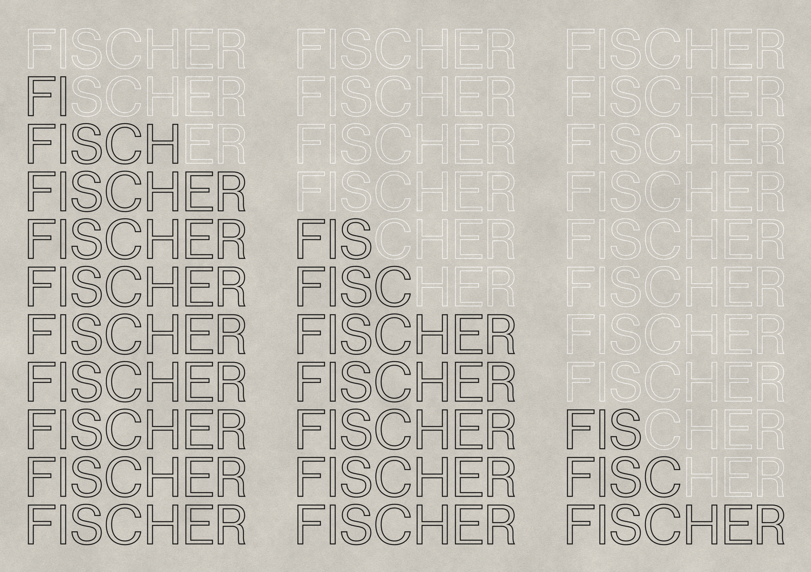
6 weights with obliques · Latin and Cyrillic · characters
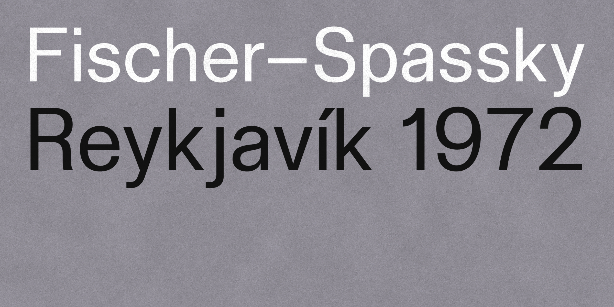
He was two points down before he had won a game
In the summer of 1972 the world chess championship was played in Reykjavík, at the Laugardalshöll sports hall, between Boris Spassky of the Soviet Union, who held the title, and Bobby Fischer of the United States, who had come through the Candidates matches by beating Mark Taimanov and Bent Larsen six games to none each, and Tigran Petrosian after them. The match was set at twenty-four games; twelve and a half points would win it, and a tie would leave the title with the champion. It almost did not begin. Fischer stayed away from the opening ceremony and sent his conditions by telegram, about the cameras in the hall and a share of the ticket money, and the start was put back while the organisers, the federations and a British banker, Jim Slater, who doubled the prize fund to two hundred and fifty thousand dollars, found a way through. When play began on 11 July, Fischer lost the first game, taking a pawn with his bishop that could not be saved, and did not come to the hall for the second, which was given to Spassky. He was two points down before he had won a game. The third was played in a small room behind the stage, away from the audience, and Fischer won it, his first win against Spassky in any game they had played. From there the match turned. He won the fifth, the sixth with an opening he had hardly ever played, the eighth and the tenth, and by the middle of August the champion was chasing him. Seven draws in a row followed, from the fourteenth game to the twentieth. The twenty-first was adjourned after forty moves, and the next day Spassky resigned it by telephone.
In the summer of 1972 the world chess championship was played in Reykjavík, at the Laugardalshöll sports hall, between Boris Spassky of the Soviet Union, who held the title, and Bobby Fischer of the United States, who had come through the Candidates matches by beating Mark Taimanov and Bent Larsen six games to none each, and Tigran Petrosian after them. The match was set at twenty-four games; twelve and a half points would win it, and a tie would leave the title with the champion. It almost did not begin. Fischer stayed away from the opening ceremony and sent his conditions by telegram, about the cameras in the hall and a share of the ticket money, and the start was put back while the organisers, the federations and a British banker, Jim Slater, who doubled the prize fund to two hundred and fifty thousand dollars, found a way through. When play began on 11 July, Fischer lost the first game, taking a pawn with his bishop that could not be saved, and did not come to the hall for the second, which was given to Spassky. He was two points down before he had won a game. The third was played in a small room behind the stage, away from the audience, and Fischer won it, his first win against Spassky in any game they had played. From there the match turned. He won the fifth, the sixth with an opening he had hardly ever played, the eighth and the tenth, and by the middle of August the champion was chasing him. Seven draws in a row followed, from the fourteenth game to the twentieth. The twenty-first was adjourned after forty moves, and the next day Spassky resigned it by telephone.
In the summer of 1972 the world chess championship was played in Reykjavík, at the Laugardalshöll sports hall, between Boris Spassky of the Soviet Union, who held the title, and Bobby Fischer of the United States, who had come through the Candidates matches by beating Mark Taimanov and Bent Larsen six games to none each, and Tigran Petrosian after them. The match was set at twenty-four games; twelve and a half points would win it, and a tie would leave the title with the champion. It almost did not begin. Fischer stayed away from the opening ceremony and sent his conditions by telegram, about the cameras in the hall and a share of the ticket money, and the start was put back while the organisers, the federations and a British banker, Jim Slater, who doubled the prize fund to two hundred and fifty thousand dollars, found a way through. When play began on 11 July, Fischer lost the first game, taking a pawn with his bishop that could not be saved, and did not come to the hall for the second, which was given to Spassky. He was two points down before he had won a game. The third was played in a small room behind the stage, away from the audience, and Fischer won it, his first win against Spassky in any game they had played. From there the match turned. He won the fifth, the sixth with an opening he had hardly ever played, the eighth and the tenth, and by the middle of August the champion was chasing him. Seven draws in a row followed, from the fourteenth game to the twentieth. The twenty-first was adjourned after forty moves, and the next day Spassky resigned it by telephone.
In the summer of 1972 the world chess championship was played in Reykjavík, at the Laugardalshöll sports hall, between Boris Spassky of the Soviet Union, who held the title, and Bobby Fischer of the United States, who had come through the Candidates matches by beating Mark Taimanov and Bent Larsen six games to none each, and Tigran Petrosian after them. The match was set at twenty-four games; twelve and a half points would win it, and a tie would leave the title with the champion. It almost did not begin. Fischer stayed away from the opening ceremony and sent his conditions by telegram, about the cameras in the hall and a share of the ticket money, and the start was put back while the organisers, the federations and a British banker, Jim Slater, who doubled the prize fund to two hundred and fifty thousand dollars, found a way through. When play began on 11 July, Fischer lost the first game, taking a pawn with his bishop that could not be saved, and did not come to the hall for the second, which was given to Spassky. He was two points down before he had won a game. The third was played in a small room behind the stage, away from the audience, and Fischer won it, his first win against Spassky in any game they had played. From there the match turned. He won the fifth, the sixth with an opening he had hardly ever played, the eighth and the tenth, and by the middle of August the champion was chasing him. Seven draws in a row followed, from the fourteenth game to the twentieth. The twenty-first was adjourned after forty moves, and the next day Spassky resigned it by telephone.
In the summer of 1972 the world chess championship was played in Reykjavík, at the Laugardalshöll sports hall, between Boris Spassky of the Soviet Union, who held the title, and Bobby Fischer of the United States, who had come through the Candidates matches by beating Mark Taimanov and Bent Larsen six games to none each, and Tigran Petrosian after them. The match was set at twenty-four games; twelve and a half points would win it, and a tie would leave the title with the champion. It almost did not begin. Fischer stayed away from the opening ceremony and sent his conditions by telegram, about the cameras in the hall and a share of the ticket money, and the start was put back while the organisers, the federations and a British banker, Jim Slater, who doubled the prize fund to two hundred and fifty thousand dollars, found a way through. When play began on 11 July, Fischer lost the first game, taking a pawn with his bishop that could not be saved, and did not come to the hall for the second, which was given to Spassky. He was two points down before he had won a game. The third was played in a small room behind the stage, away from the audience, and Fischer won it, his first win against Spassky in any game they had played. From there the match turned. He won the fifth, the sixth with an opening he had hardly ever played, the eighth and the tenth, and by the middle of August the champion was chasing him. Seven draws in a row followed, from the fourteenth game to the twentieth. The twenty-first was adjourned after forty moves, and the next day Spassky resigned it by telephone.
In the summer of 1972 the world chess championship was played in Reykjavík, at the Laugardalshöll sports hall, between Boris Spassky of the Soviet Union, who held the title, and Bobby Fischer of the United States, who had come through the Candidates matches by beating Mark Taimanov and Bent Larsen six games to none each, and Tigran Petrosian after them. The match was set at twenty-four games; twelve and a half points would win it, and a tie would leave the title with the champion. It almost did not begin. Fischer stayed away from the opening ceremony and sent his conditions by telegram, about the cameras in the hall and a share of the ticket money, and the start was put back while the organisers, the federations and a British banker, Jim Slater, who doubled the prize fund to two hundred and fifty thousand dollars, found a way through. When play began on 11 July, Fischer lost the first game, taking a pawn with his bishop that could not be saved, and did not come to the hall for the second, which was given to Spassky. He was two points down before he had won a game. The third was played in a small room behind the stage, away from the audience, and Fischer won it, his first win against Spassky in any game they had played. From there the match turned. He won the fifth, the sixth with an opening he had hardly ever played, the eighth and the tenth, and by the middle of August the champion was chasing him. Seven draws in a row followed, from the fourteenth game to the twentieth. The twenty-first was adjourned after forty moves, and the next day Spassky resigned it by telephone.
In the summer of 1972 the world chess championship was played in Reykjavík, at the Laugardalshöll sports hall, between Boris Spassky of the Soviet Union, who held the title, and Bobby Fischer of the United States, who had come through the Candidates matches by beating Mark Taimanov and Bent Larsen six games to none each, and Tigran Petrosian after them. The match was set at twenty-four games; twelve and a half points would win it, and a tie would leave the title with the champion. It almost did not begin. Fischer stayed away from the opening ceremony and sent his conditions by telegram, about the cameras in the hall and a share of the ticket money, and the start was put back while the organisers, the federations and a British banker, Jim Slater, who doubled the prize fund to two hundred and fifty thousand dollars, found a way through. When play began on 11 July, Fischer lost the first game, taking a pawn with his bishop that could not be saved, and did not come to the hall for the second, which was given to Spassky. He was two points down before he had won a game. The third was played in a small room behind the stage, away from the audience, and Fischer won it, his first win against Spassky in any game they had played. From there the match turned. He won the fifth, the sixth with an opening he had hardly ever played, the eighth and the tenth, and by the middle of August the champion was chasing him. Seven draws in a row followed, from the fourteenth game to the twentieth. The twenty-first was adjourned after forty moves, and the next day Spassky resigned it by telephone.
In the summer of 1972 the world chess championship was played in Reykjavík, at the Laugardalshöll sports hall, between Boris Spassky of the Soviet Union, who held the title, and Bobby Fischer of the United States, who had come through the Candidates matches by beating Mark Taimanov and Bent Larsen six games to none each, and Tigran Petrosian after them. The match was set at twenty-four games; twelve and a half points would win it, and a tie would leave the title with the champion. It almost did not begin. Fischer stayed away from the opening ceremony and sent his conditions by telegram, about the cameras in the hall and a share of the ticket money, and the start was put back while the organisers, the federations and a British banker, Jim Slater, who doubled the prize fund to two hundred and fifty thousand dollars, found a way through. When play began on 11 July, Fischer lost the first game, taking a pawn with his bishop that could not be saved, and did not come to the hall for the second, which was given to Spassky. He was two points down before he had won a game. The third was played in a small room behind the stage, away from the audience, and Fischer won it, his first win against Spassky in any game they had played. From there the match turned. He won the fifth, the sixth with an opening he had hardly ever played, the eighth and the tenth, and by the middle of August the champion was chasing him. Seven draws in a row followed, from the fourteenth game to the twentieth. The twenty-first was adjourned after forty moves, and the next day Spassky resigned it by telephone.
In the summer of 1972 the world chess championship was played in Reykjavík, at the Laugardalshöll sports hall, between Boris Spassky of the Soviet Union, who held the title, and Bobby Fischer of the United States, who had come through the Candidates matches by beating Mark Taimanov and Bent Larsen six games to none each, and Tigran Petrosian after them. The match was set at twenty-four games; twelve and a half points would win it, and a tie would leave the title with the champion. It almost did not begin. Fischer stayed away from the opening ceremony and sent his conditions by telegram, about the cameras in the hall and a share of the ticket money, and the start was put back while the organisers, the federations and a British banker, Jim Slater, who doubled the prize fund to two hundred and fifty thousand dollars, found a way through. When play began on 11 July, Fischer lost the first game, taking a pawn with his bishop that could not be saved, and did not come to the hall for the second, which was given to Spassky. He was two points down before he had won a game. The third was played in a small room behind the stage, away from the audience, and Fischer won it, his first win against Spassky in any game they had played. From there the match turned. He won the fifth, the sixth with an opening he had hardly ever played, the eighth and the tenth, and by the middle of August the champion was chasing him. Seven draws in a row followed, from the fourteenth game to the twentieth. The twenty-first was adjourned after forty moves, and the next day Spassky resigned it by telephone.
In the summer of 1972 the world chess championship was played in Reykjavík, at the Laugardalshöll sports hall, between Boris Spassky of the Soviet Union, who held the title, and Bobby Fischer of the United States, who had come through the Candidates matches by beating Mark Taimanov and Bent Larsen six games to none each, and Tigran Petrosian after them. The match was set at twenty-four games; twelve and a half points would win it, and a tie would leave the title with the champion. It almost did not begin. Fischer stayed away from the opening ceremony and sent his conditions by telegram, about the cameras in the hall and a share of the ticket money, and the start was put back while the organisers, the federations and a British banker, Jim Slater, who doubled the prize fund to two hundred and fifty thousand dollars, found a way through. When play began on 11 July, Fischer lost the first game, taking a pawn with his bishop that could not be saved, and did not come to the hall for the second, which was given to Spassky. He was two points down before he had won a game. The third was played in a small room behind the stage, away from the audience, and Fischer won it, his first win against Spassky in any game they had played. From there the match turned. He won the fifth, the sixth with an opening he had hardly ever played, the eighth and the tenth, and by the middle of August the champion was chasing him. Seven draws in a row followed, from the fourteenth game to the twentieth. The twenty-first was adjourned after forty moves, and the next day Spassky resigned it by telephone.
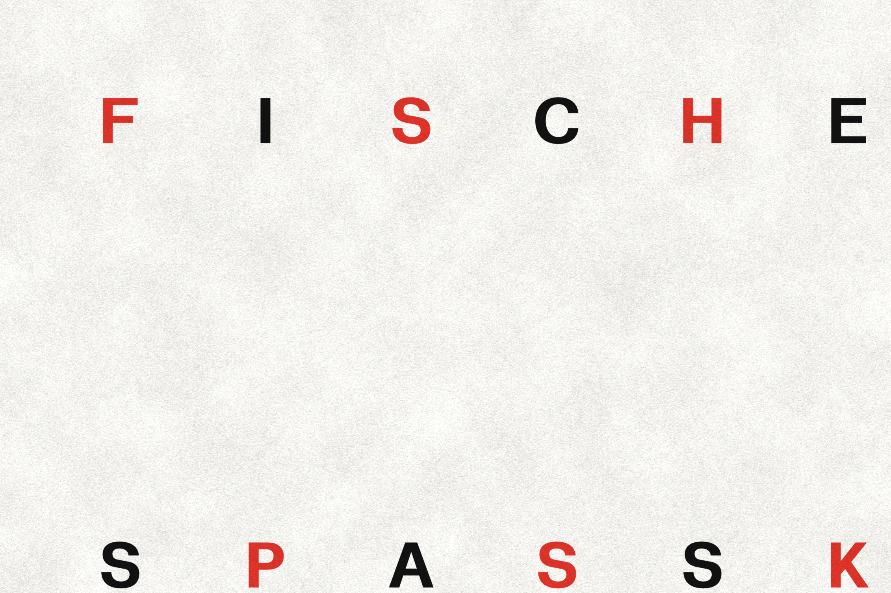
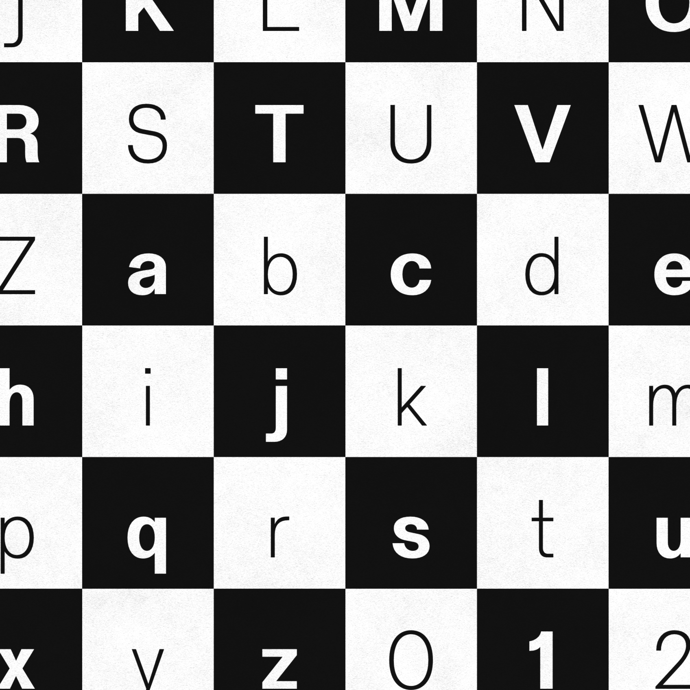
Thin
Black
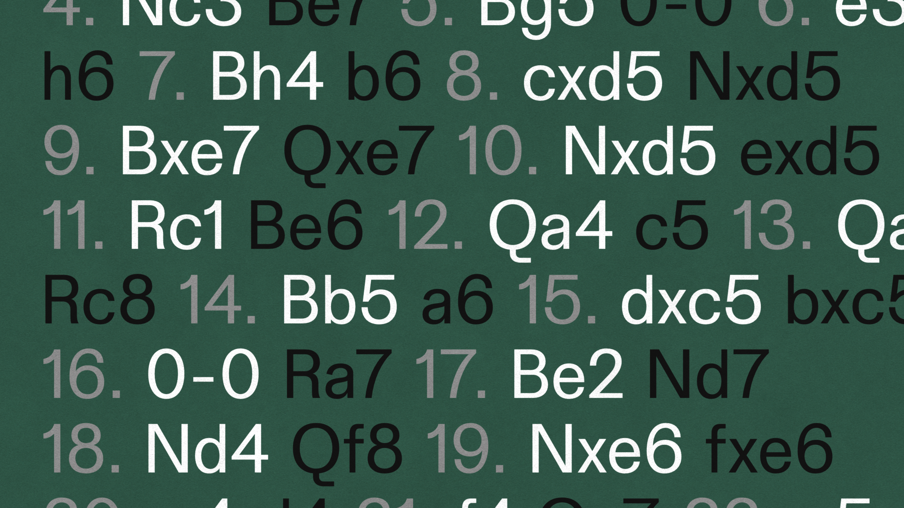
Game six, 23 July. Fischer, who had opened with the king’s pawn for almost his whole career, moved the c-pawn two squares. The Soviet team had talked about the chance before the match, and Spassky had waved it away; he answered with the Tartakower defence he had prepared, and the game went into a Queen’s Gambit Declined. Fischer pressed on the queenside, broke in the centre with e4 and f4, and drove his rooks down the f-file. Spassky resigned after the forty-first move.
Game six, 23 July. Fischer, who had opened with the king’s pawn for almost his whole career, moved the c-pawn two squares. The Soviet team had talked about the chance before the match, and Spassky had waved it away; he answered with the Tartakower defence he had prepared, and the game went into a Queen’s Gambit Declined. Fischer pressed on the queenside, broke in the centre with e4 and f4, and drove his rooks down the f-file. Spassky resigned after the forty-first move.
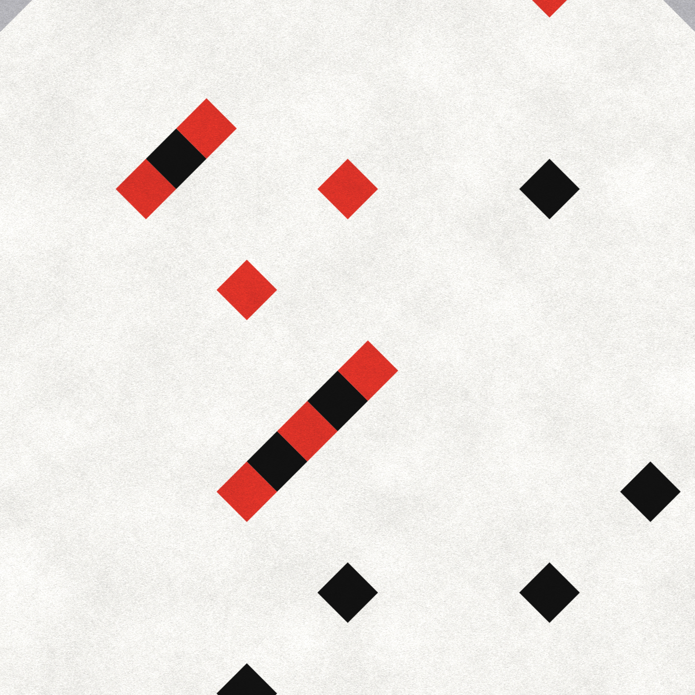
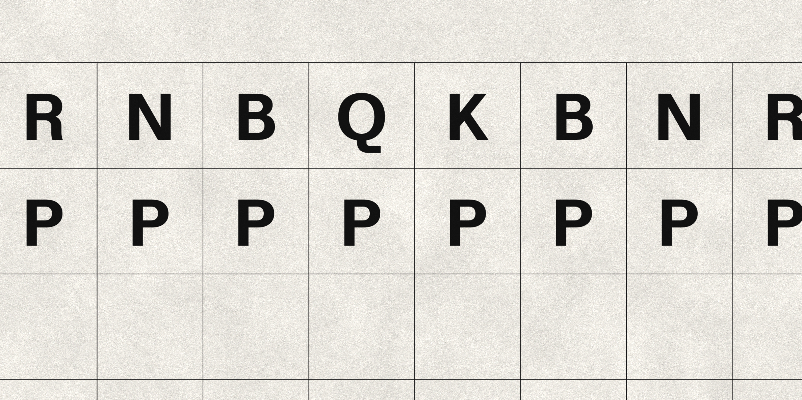
05
Game five was decided by one move. After twenty-six moves Spassky put his queen on c2, and Fischer took a pawn on a4 with his bishop. Spassky resigned at once: whichever way he took back, Black’s queen would come in on e4.
11
In game eleven Spassky found an answer. Fischer played his favourite line of the Sicilian, the Poisoned Pawn, and on the fourteenth move Spassky sent his knight back to its starting square. Fischer had not prepared for it, his queen was trapped, and he resigned. It was the only time in his career that he lost a serious game with that line.
13
Game thirteen was adjourned at the forty-second move in a sharp position that neither side could win by force. The Soviet team decided it was a draw. Fischer stayed up until eight in the morning analysing it; play resumed at half past two. Twenty-seven moves later he won an ending of pawns against a rook, after Spassky missed a simple draw, and Spassky sat on at the board for a long time, unable to believe it.
21
For the last game Fischer chose a line of the Sicilian he had never played with Black. It was level after fourteen moves, but Spassky played the ending badly and it was adjourned with Fischer far ahead. Fischer’s fortieth move was not the best, and a different sealed move might have given Spassky drawing chances. He sealed another. On 1 September, the day set for the resumption, the arbiter Lothar Schmid told Fischer and the audience that Spassky had resigned by telephone.
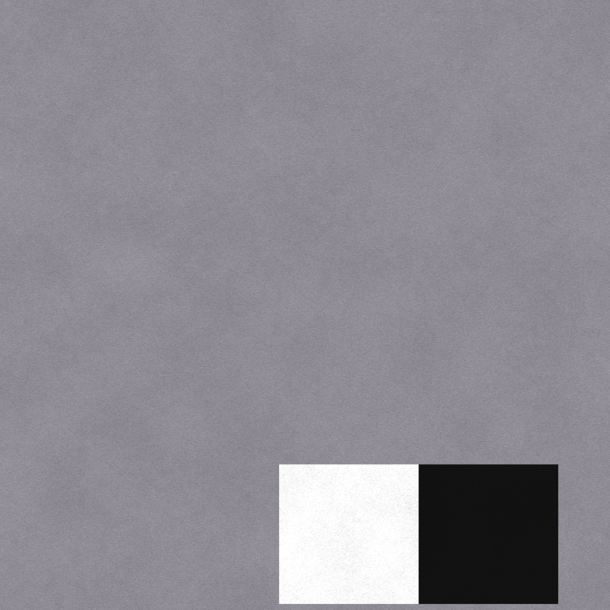
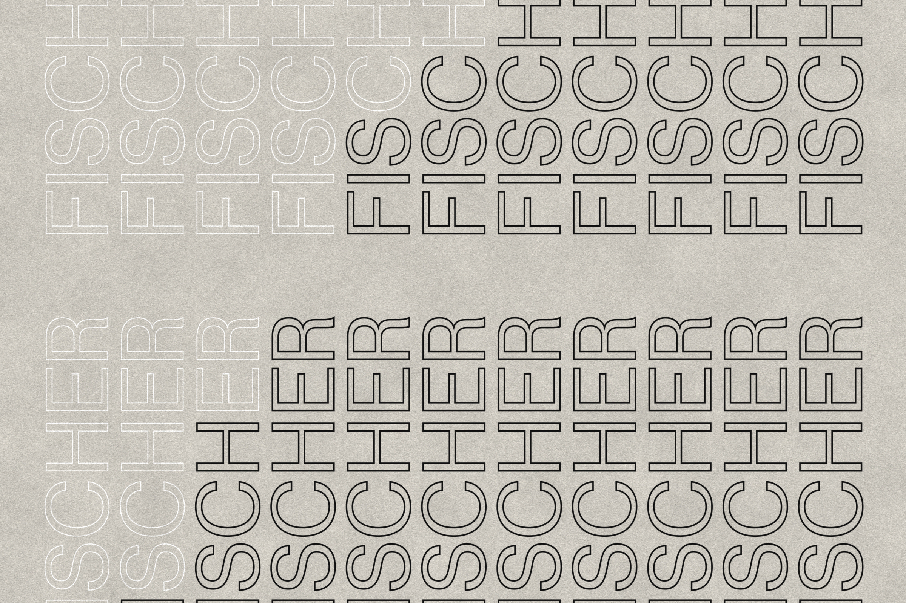
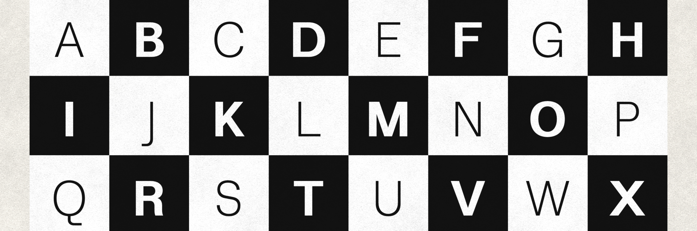
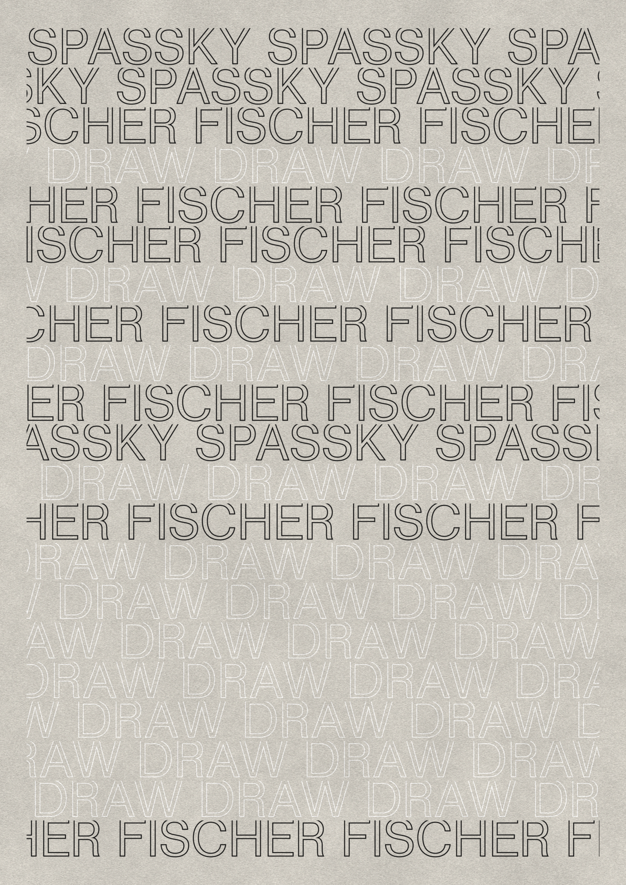
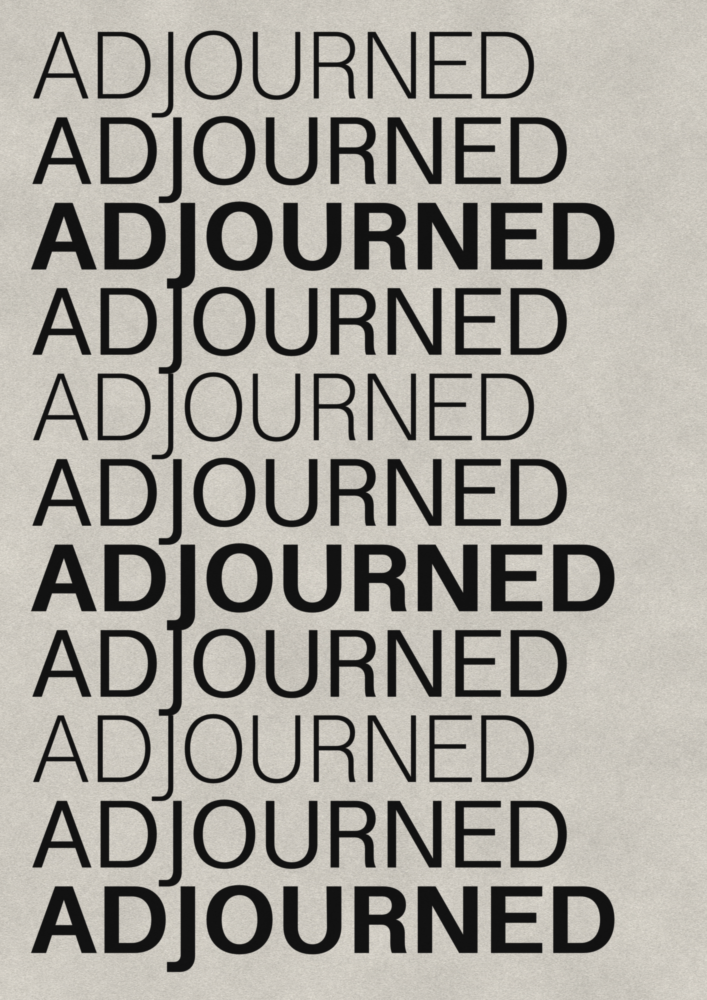
Fischer stayed up until eight in the morning
Game thirteen was adjourned at the forty-second move in a sharp position that neither side could win by force. The Soviet team decided it was a draw. Fischer stayed up until eight in the morning analysing it; play resumed at half past two. Twenty-seven moves later he won an ending of pawns against a rook, after Spassky missed a simple draw, and Spassky sat on at the board for a long time, unable to believe it.
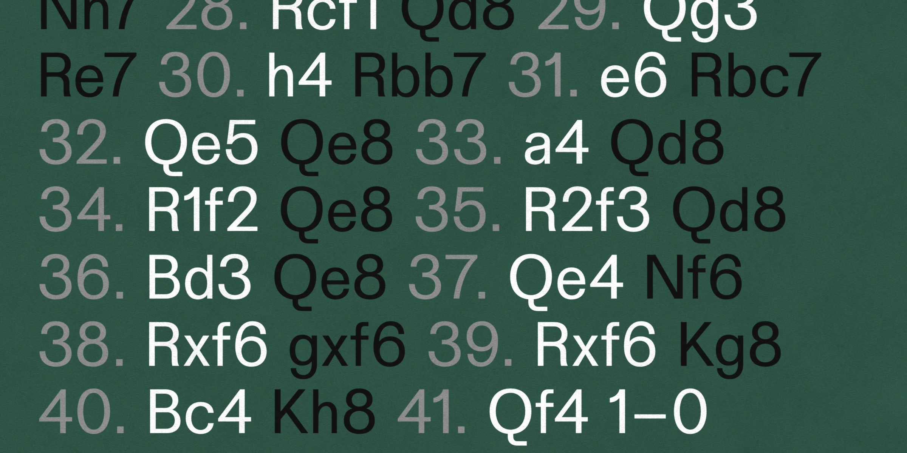
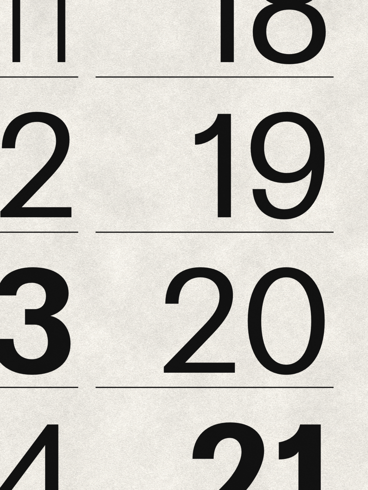
1. e4 Nf6 2. e5 Nd5 3. d4 d6 4. Nf3 g6 5. Bc4 Nb6 6. Bb3 Bg7 7. Nbd2 0-0 8. h3 a5 9. a4 dxe5 10. dxe5 Na6 11. 0-0 Nc5 12. Qe2 Qe8 13. Ne4 Nbxa4 14. Bxa4 Nxa4 15. Re1 Nb6 16. Bd2 a4 17. Bg5 h6 18. Bh4 Bf5 19. g4 Be6 20. Nd4 Bc4 21. Qd2 Qd7 22. Rad1 Rfe8 23. f4 Bd5 24. Nc5 Qc8 25. Qc3 e6 26. Kh2 Nd7 27. Nd3 c5 28. Nb5 Qc6 29. Nd6 Qxd6 30. exd6 Bxc3 31. bxc3 f6 32. g5 hxg5 33. fxg5 f5 34. Bg3 Kf7 35. Ne5+ Nxe5 36. Bxe5 b5 37. Rf1 Rh8 38. Bf6 a3 39. Rf4 a2 40. c4 Bxc4 41. d7 Bd5 42. Kg3 Ra3+ 43. c3 Rha8 44. Rh4 e5 45. Rh7+ Ke6 46. Re7+ Kd6 47. Rxe5 Rxc3+ 48. Kf2 Rc2+ 49. Ke1 Kxd7 50. Rexd5+ Kc6 51. Rd6+ Kb7 52. Rd7+ Ka6 53. R7d2 Rxd2 54. Kxd2 b4 55. h4 Kb5 56. h5 c4 57. Ra1 gxh5 58. g6 h4 59. g7 h3 60. Be7 Rg8 61. Bf8 h2 62. Kc2 Kc6 63. Rd1 b3+ 64. Kc3 h1=Q 65. Rxh1 Kd5 66. Kb2 f4 67. Rd1+ Ke4 68. Rc1 Kd3 69. Rd1+ Ke2 70. Rc1 f3 71. Bc5 Rxg7 72. Rxc4 Rd7 73. Re4+ Kf1 74. Bd4 f2 0–1
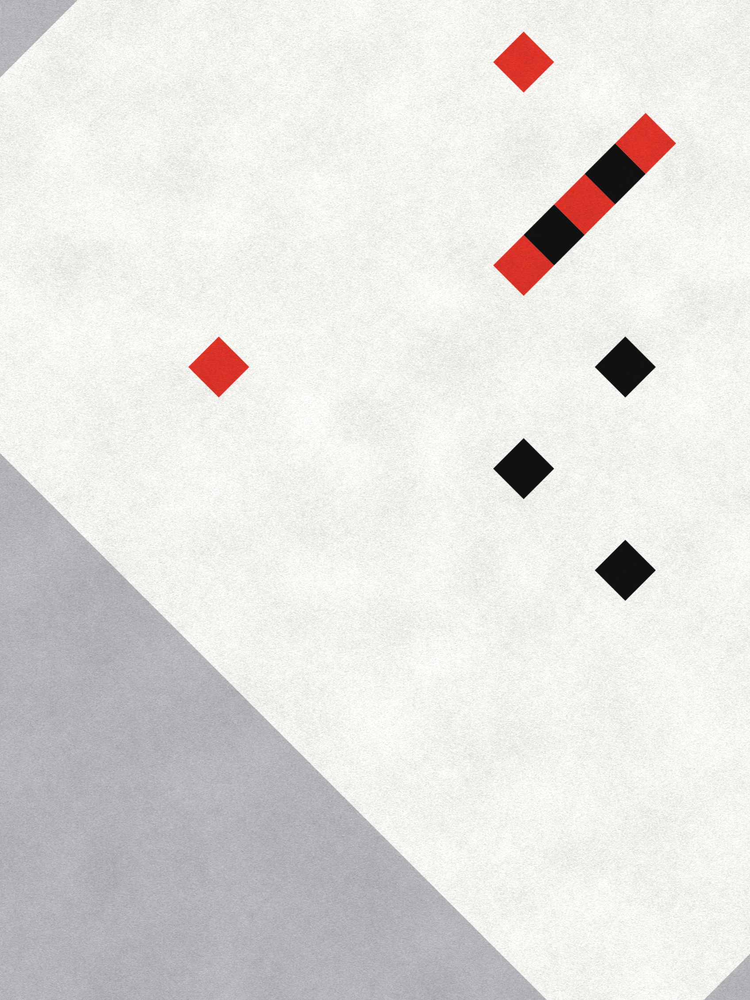
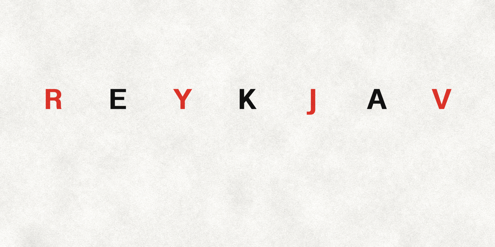
For the last game Fischer chose a line of the Sicilian he had never played with Black. It was level after fourteen moves, but Spassky played the ending badly and it was adjourned with Fischer far ahead. Fischer’s fortieth move was not the best, and a different sealed move might have given Spassky drawing chances. He sealed another. On 1 September, the day set for the resumption, the arbiter Lothar Schmid told Fischer and the audience that Spassky had resigned by telephone.
In game eleven Spassky found an answer. Fischer played his favourite line of the Sicilian, the Poisoned Pawn, and on the fourteenth move Spassky sent his knight back to its starting square. Fischer had not prepared for it, his queen was trapped, and he resigned. It was the only time in his career that he lost a serious game with that line.
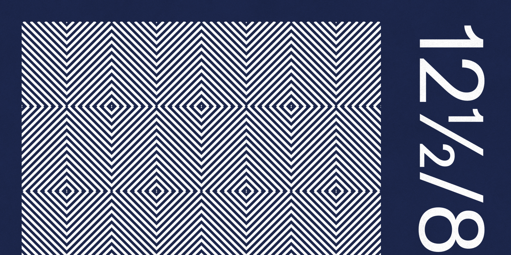
The twenty-first game began on 31 August with Spassky as White. It was adjourned after the fortieth move with Fischer well ahead, and in the morning Spassky did not return to the board. He resigned by telephone. Fischer was champion of the world, the eleventh, and the first American to hold the title. The score was seven wins, eleven draws and three losses: twelve and a half points to eight and a half.
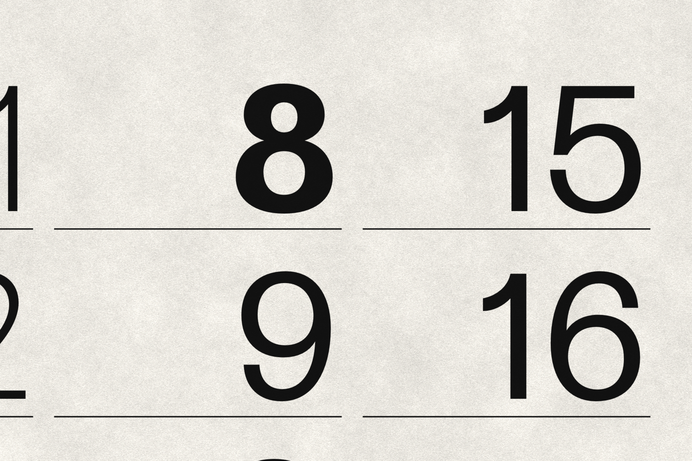
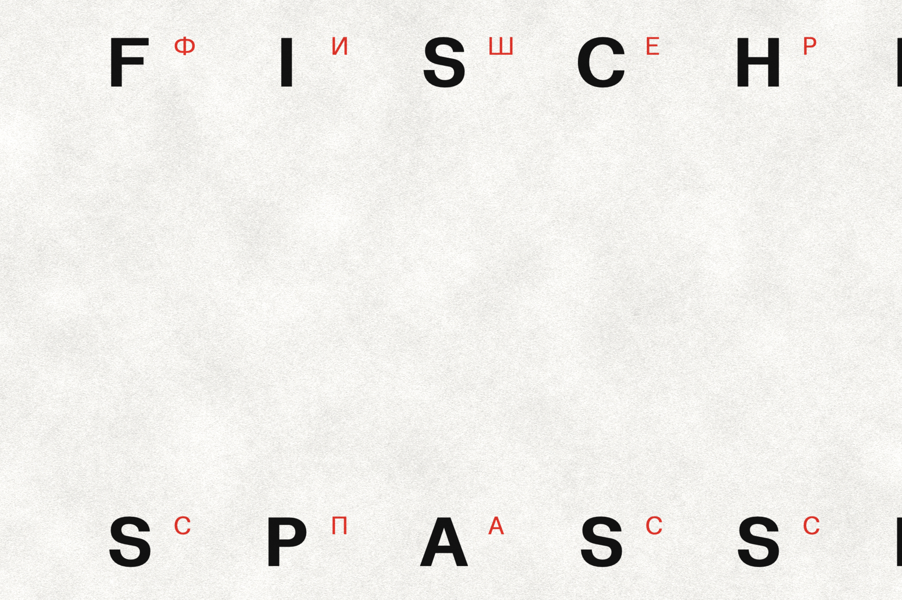
Quote
“Let’s not bother with such nonsense – I’ll play the Tartakower.”
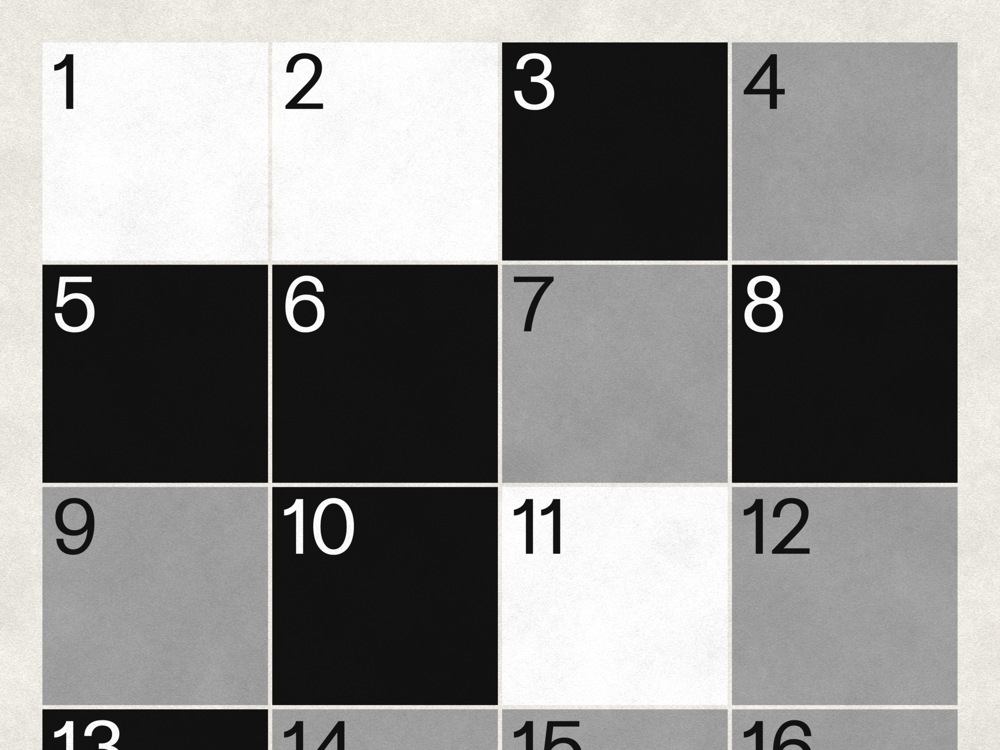
From the fourteenth game to the twentieth, seven games in a row, the result was the same: a draw. Fischer led by three points, and Spassky needed wins that did not come. The fourteenth was a Queen’s Gambit; the fifteenth a Najdorf Sicilian; the sixteenth a Ruy Lopez, exchanged early; the seventeenth Fischer’s first Pirc Defence; the eighteenth and the twentieth Richter–Rauzer attacks; the nineteenth an Alekhine. Each one was half a point, and each half point brought Fischer closer to the twelve and a half he needed.
From the fourteenth game to the twentieth, seven games in a row, the result was the same: a draw. Fischer led by three points, and Spassky needed wins that did not come. The fourteenth was a Queen’s Gambit; the fifteenth a Najdorf Sicilian; the sixteenth a Ruy Lopez, exchanged early; the seventeenth Fischer’s first Pirc Defence; the eighteenth and the twentieth Richter–Rauzer attacks; the nineteenth an Alekhine. Each one was half a point, and each half point brought Fischer closer to the twelve and a half he needed.
From the fourteenth game to the twentieth, seven games in a row, the result was the same: a draw. Fischer led by three points, and Spassky needed wins that did not come. The fourteenth was a Queen’s Gambit; the fifteenth a Najdorf Sicilian; the sixteenth a Ruy Lopez, exchanged early; the seventeenth Fischer’s first Pirc Defence; the eighteenth and the twentieth Richter–Rauzer attacks; the nineteenth an Alekhine. Each one was half a point, and each half point brought Fischer closer to the twelve and a half he needed.
From the fourteenth game to the twentieth, seven games in a row, the result was the same: a draw. Fischer led by three points, and Spassky needed wins that did not come. The fourteenth was a Queen’s Gambit; the fifteenth a Najdorf Sicilian; the sixteenth a Ruy Lopez, exchanged early; the seventeenth Fischer’s first Pirc Defence; the eighteenth and the twentieth Richter–Rauzer attacks; the nineteenth an Alekhine. Each one was half a point, and each half point brought Fischer closer to the twelve and a half he needed.
From the fourteenth game to the twentieth, seven games in a row, the result was the same: a draw. Fischer led by three points, and Spassky needed wins that did not come. The fourteenth was a Queen’s Gambit; the fifteenth a Najdorf Sicilian; the sixteenth a Ruy Lopez, exchanged early; the seventeenth Fischer’s first Pirc Defence; the eighteenth and the twentieth Richter–Rauzer attacks; the nineteenth an Alekhine. Each one was half a point, and each half point brought Fischer closer to the twelve and a half he needed.
From the fourteenth game to the twentieth, seven games in a row, the result was the same: a draw. Fischer led by three points, and Spassky needed wins that did not come. The fourteenth was a Queen’s Gambit; the fifteenth a Najdorf Sicilian; the sixteenth a Ruy Lopez, exchanged early; the seventeenth Fischer’s first Pirc Defence; the eighteenth and the twentieth Richter–Rauzer attacks; the nineteenth an Alekhine. Each one was half a point, and each half point brought Fischer closer to the twelve and a half he needed.
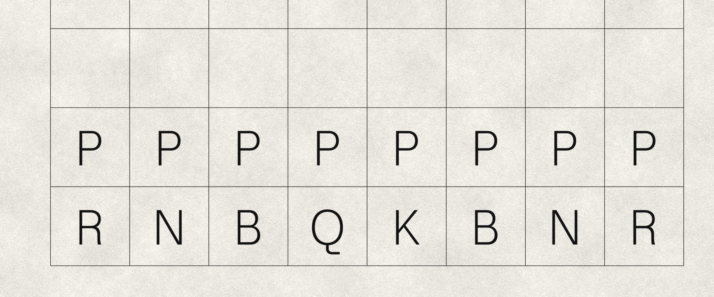
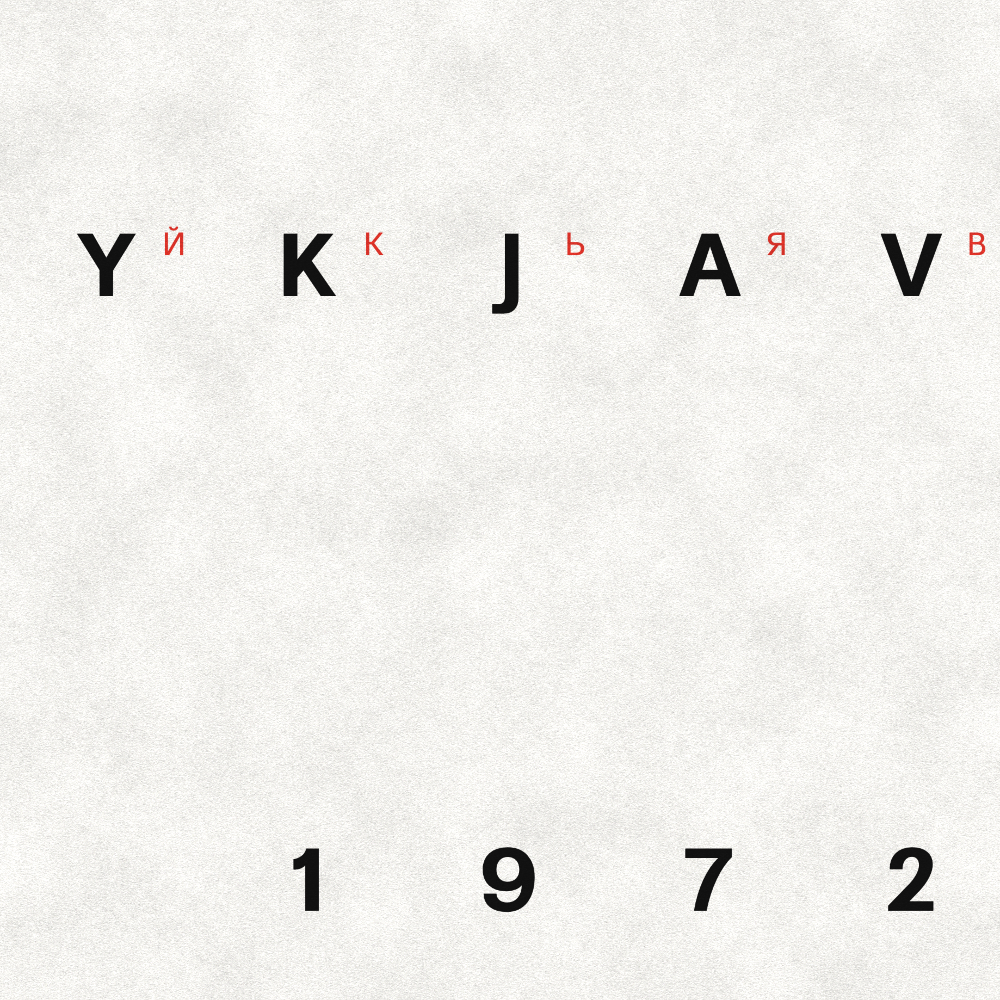
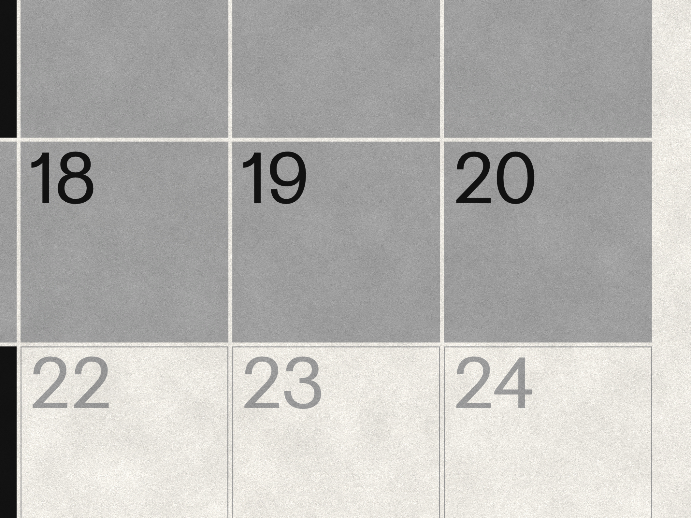
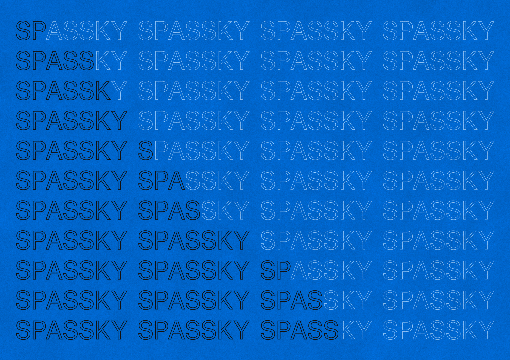
Zerko Grotesk, a rationalist grotesk for Latin and Cyrillic, made for long reading and for display in multilingual settings.
Most Cyrillic typefaces are drawn after their Latin and take on its structure. Zerko was drawn across both scripts at once, so that each keeps the conventions internal to it. The Cyrillic is not a Latin in disguise, and the Latin is not bent to meet it.
It began as the practical half of my MRes thesis at the Royal College of Art, Script Parity as Design Hypothesis. The thesis asks what parity between the two scripts looks like, and where it can be pursued without reducing one script to the logic of the other. It was set in Zerko.
The family is drawn on three masters, Thin, Regular and Bold, and runs in six weights from Thin to Black, each with an oblique.
The specimens tell one story in both alphabets: the 1972 World Chess Championship in Reykjavík, Fischer against Spassky, the names, the moves and the score set side by side.
A grotesk for pages where the two scripts meet as equals.
Try it
Script Parity as Design Hypothesis, the MRes thesis, set in Zerko